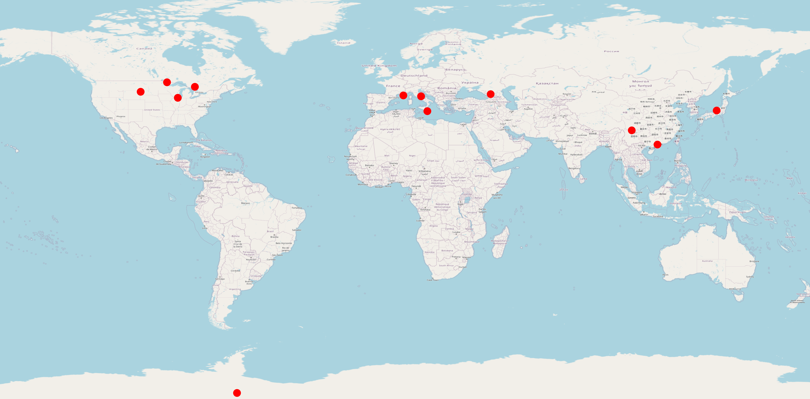

Research
Inspiration
"The nitrogen in our DNA, the calcium in our teeth, the iron in our blood, the carbon in our apple pies were made in the interiors of collapsing stars. We are made of starstuff."
-- Carl Sagan
Supernova Early Warning System

Purdue Wildlife Area Observatory
Circa 2021 Purdue's Department of Forestry and Natural resources partnered with the Department of Physics and Astronomy to build a research grade astronomical observatory under the direction of professor Danny Milisavljevic and farm manager Brian Beheler. I am upgrading the equipment to a 14-inch Celestron Edge HD Schmidt-Cassegrain telescope driven on a Paramount MX+ mount with new camera, filters, and off-axis guider. Learn more...
Eclipsing Binary Stars
View my AAS iPoster.
Transiting Exoplanets
The Transiting Exoplanet Survey Satelite (TESS) has been monitoring the sky for transiting exoplanet signals since its launch in April of 2018. View my AAS iPoster.
This page is a work in progress.